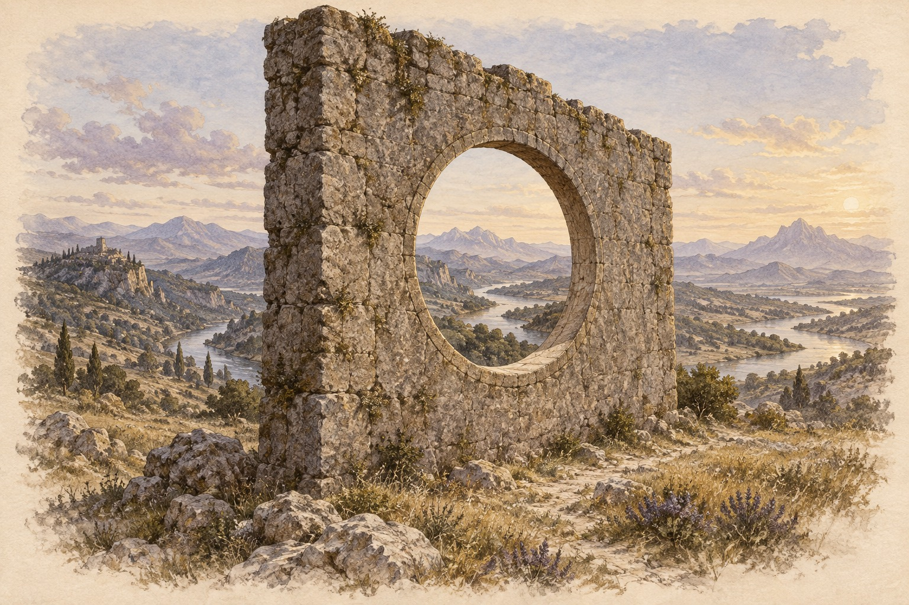

Part II
Chapter 9: Bounded Infinity
Estimated reading time: 8 min
“Hold Infinity in the palm of your hand, and Eternity in an hour.”
— William Blake
Close your eyes for a moment. Feel the boundary of your skin: cloth, air, pressure.
Follow one breath in and out.
Notice that this same breath belongs to the room, the city, the planet that holds you. You are both defined and continuous: this body, this lifetime, and the wider world that sustains them.
The Paradox of the Boundless
Bounded Infinity opens a strange paradox.
The infinite nests within the finite.
The paradox names a contemplative metaphysical possibility: actual infinity may express locally through and within finite forms. A boundary concentrates depth into form without exhausting the field from which that form arises.
The idea can stir resistance: limits are often cast as prisons, freedom as their absence.
This pillar offers a reversal: true freedom and boundless possibility arise through structure. Boundaries become apertures rather than walls—interfaces through which depth takes local form. A living boundary works more like a membrane than a fortress: too rigid and exchange dies; too porous and form cannot keep its contour. Form becomes freedom’s forge.
It is the riverbank that gives the river its power, channelling its flow into something you can navigate and trust.
The Mandelbrot set is a bounded shape you can put on a screen. Magnify the edge and the detail does not run out: the same motifs return altered, all from one simple rule. The set does not grow as you explore it; each new view reveals more of what the rule already defines. A finite outline, more pattern than any single view can exhaust.
In a living body, bounded form meets becoming. Transcendence is not escape from the frame; it is deeper entry into the life unfolding through it.
To feel the image directly, bring one hand to the boundary of your skin—cheek, forearm, or sternum. Sense where “you” seem to end: temperature shift, cloth, air. Then soften your attention into the aliveness within that boundary: breath moving, pulse, subtle tingling. One finite outline, more sensation than a single pass of attention can exhaust.
In daily life, a limit met with focused presence can become a source of unexpected creativity and depth rather than mere frustration.
The Dragon meets resistance as contour rather than prison. That is how it finds lift.
Here the mastery is simple: the boundless moves through the bounded. Sometimes you feel it first through a small vessel held faithfully: feet on the floor, one hand on the belly, three colours or three words, three minutes given wholly to what is here. The limit concentrates contact; it does not contain the field.
Infinity Given Contour
Bounded Infinity defies the instinct to treat limits as endings. A boundary gives local contour without sealing the infinite inside or letting the form own it: a circle’s countless points, a fractal’s endless depths.
The microcosm can carry a trace of something larger: spaciousness taking local shape in finite flesh.
Spiritual traditions have long approached this paradox through repetition, vow, and return. A mantra whispered each dawn, one carefully tended breath, or a brushstroke repeated across the same small canvas can become an entry into depths the first gesture could not reveal.
Specific, bounded acts carry us into contact with what feels immeasurable. Discipline becomes devotion.
Nadia paints at the kitchen table after the house finally quiets. Forty minutes before bed, three colours, five palm-sized panels—that is all the space life gives her.
At first Nadia rages at the limits. Then she commits to them. Night after night she returns, adding one deliberate brushstroke per panel, watching layers dry while the clock ticks.
Weeks in, the small surfaces open: constellations of texture, whispers of landscapes, whole worlds held in a hand. Friends later stand before the finished series amazed at the spaciousness. Nadia shrugs; she met that vastness in the constraint itself. Bounded time and tiny canvases became a bridge to the infinite waiting in her devotion.
The immeasurable becomes perceptible through the form you actually inhabit.
Limits become a kiln.
Boundary-centered work in quantum gravity and celestial holography1 offers a distant scientific echo: in some approaches, depth can be described through information carried at a boundary. The physics is technical and unsettled; the image is enough here.
The Dragon does not erase the boundary. It learns to read the depth appearing at the edge.
Stay with the small panel, the late hour, the hand returning anyway. Sometimes the boundless first appears that way: one small vessel held long enough to begin shining.
The Pixel and the Plenitude
We look into the night and call what reaches us the universe. Yet the observable cosmos is bounded by a horizon: the region from which light has had time to reach us. What appears total may already be one local window.
Max Tegmark’s multiverse hierarchy2 offers a speculative widening of that frame. At one level, our observable region becomes only one horizon-volume within a much larger cosmos. At another, even the laws and constants familiar to us may belong to one local physical regime. Many-worlds extends multiplicity into branching quantum histories, while Tegmark’s most radical proposal treats different mathematical structures themselves as physically real.
Each step loosens another assumed finality: first the limits of our visible sky, then the uniqueness of our laws, histories, and finally our mathematical description of reality.
These proposals range from cosmology through interpretation into metaphysics. They do not establish the Entangled Firmament, the Void, or the Everfolding Ontology. Their value here is more modest and more suggestive: they remind us that a frame can be locally complete enough to inhabit without being the final boundary of what exists.
The known cosmos can therefore serve as an image of Bounded Infinity: immense enough to exceed a life, yet perhaps itself only one bounded expression within a greater possibility-space. Local does not mean unreal. It is within the local that bodies meet, choices alter conditions, and possibility acquires consequence.

The Dragon’s Teaching: Freedom Within Form
What appears as contradiction—limitless possibility within finite form—is better understood as complementarity. The infinite does not stand against form; it expresses through form.
Pure potential remains abstract until structure gives it somewhere to gather. A vessel gives possibility contour, attention somewhere to deepen, and action a form it can actually take. A well-chosen limit steadies attention and gives desire direction. Within it, the particular can become rich enough to reveal more than abstraction ever could.
The Dragon’s teaching is integration. Its freedom comes from alignment with physical law. It soars by mastering flight within gravity.
The point is to inhabit boundaries so fully that depth can open within them.
The vessel is never theoretical. It is the body you inhabit, the circumstances you are in, and the history you carry. These are where vastness either becomes choice, relation, and responsibility—or remains fantasy. The body gives consciousness a finite place to meet the world. Circumstance gives possibility consequence. History gives transformation material rather than a blank surface.
Finite Beings Cannot Carry Infinite Repair
Bounded Infinity is also a teaching in mercy toward others.
Many of our deepest wounds form around an impossible absence: the mother who could not hold us, the father who could not see us, the protector who never arrived in the form we needed. Later, without knowing it, the psyche may crown a partner, friend, teacher, or beloved with that impossible role, asking a finite human being to become the perfect parent life withheld.
But finite beings cannot carry infinite repair.
The Dragon sees the vessel clearly. Human limitation does not excuse harm, immaturity, betrayal, or neglect. Compassion does not grant permission for harm, and truth does not require tolerance of it. The subtler work is to stop mistaking another person’s limitation for cosmic abandonment.
Every human being carries a particular, bounded expression of depth, mystery, beauty, and possibility. No one can become the infinite source of what was missing.
Accepting Bounded Infinity means grieving the perfect parent, releasing the impossible demand, and meeting the person before us as human. Only there can love become relational instead of reparative fantasy.
You are inside this same teaching. Your own boundaries are the apertures through which what is deepest in you takes recognizable shape. If depth becomes perceptible, it meets the world through a finite life without being exhausted by it.
Notice where a real limit is asking to be inhabited rather than defeated. Sometimes freedom appears not by escaping the form, but by committing to it deeply enough that another dimension of it becomes visible.
To walk the Path of the Dragon is to hold that polarity: form and freedom, boundary and boundlessness, finite life and inexhaustible depth.
Holding the Paradox
Bounded Infinity becomes lived when a limit stops sounding like a verdict and begins to shape devotion.
Holding the paradox means letting the vessel and the vast stop fighting each other. True power flows through form: the vessel gives direction to what moves through it without owning or exhausting the source.
What you call limitation may be the exact contour that lets your life carry meaning, devotion, and force. A boundary is never only an edge; it is also a line of relation. Limits meet other limits, repeated choices begin to draw a path, and a life slowly reveals its hidden architecture.
Held that way, the vessel stops feeling like confinement and begins to glow from within.
The stars within you are not elsewhere. Through this finite life, the cosmos comes to know itself in form.
In the mid-2020s, work on celestial holography continued to revisit boundary-centered pictures of gravity and spacetime; see Laura Donnay, Celestial holography: An asymptotic symmetry perspective (2024), and Charlotte Sleight and Massimo Taronna, Celestial Holography Revisited (2024).↩︎
Max Tegmark, The Multiverse Hierarchy (2009).↩︎